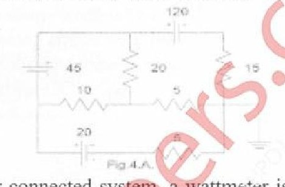

Total there will be approx 6 questions each of 3 marks , from all the chapters of the syllabus(Attempt any 5).
Question no 1 is compulsory.
Answer any three from remaining 5 questions.
State Maximum Power Transfer Theorem.[2]
Derive the formula to convert a delta circuit into an equivalent star.[4]
Define average value and RMS value of an alternating quantity.[4]
Prove that power in a 3-phase delta connected system is 3 times that of a star connected system.[4]
Explain the working principle of a single phase transformer.[4]
What is the use of commutator in a DC machine.[2]
Obtain current through 1ohm resistance by using Super position theorem,in foll fig.[10]
A coil is connected across a non-inductive resistance of 120 ohm.When a 240V,50Hz supply is applied to this circuit the coil draws a current 5A and total current is 6A.Determine the power and power factor of [10]
the coil
the whole circuit
Obtain Norton's equivalent circuit of the network shown in fig. across the terminals A and B.[10]
A series RLC circuit,if w0 is the resonant frquency,w1 and w2 are the half power frequencies,prove that w0=√(w1w2)[5]
Derive the equivalent circuit of a 1-phase transformer.[5]
Obtain current through 15ohm resistance by nodal analysis in fig.Take reference node as marked.[10]

In a balanced 3 phase,star connected system a wattmeter is connected with its current coil in series with Y line and pressure coil between Y and R lines.[10]
Draw a neat circuit diagram showing the above wattmeter connection.Assuming a lagging power factor,draw the corresponding phasor diagram and derive the wattmeter reading in terms of line voltage,line current and phase angle.
Obtain current through 60ohm resistance by Mesh analysis in fig.[6]
Develope the phasor diagram of a single transformer supplying to a resistive load.[8]
Derive the emf equation of a DC generator.[6]
A resistor and a pure reactance are connected in series across a 150V ac supply.When the frequency is 40Hz,the circuit draws 5A.[10]
When the frequency is increased to 50Hz,the circuit draws 6A.Find the value of resistance and the element value of reactance.Also find the power drawn in second case.
A single phase 10KVA,500V/250V,50Hz transformer has the following constants.[10]
Resistance : primary=0.2ohms, secondary=0.5ohms
Reactance : primary=0.4ohms, secondary=0.1ohms
Resistance of equivalent exciting circuit w.r.t primary=1500ohms.
Reactance of equivalent exciting circuit w.r.t primary=750ohms.
What will be the reading of the instruments placed in primary side when the transformer is connected for OC and SC tests.
Question no 1 is compulsory.
Answer any three from remaining 5 questions.
Answer any five: [20]
A voltage v(t)=282.85sin(100Πt) is applied to a coil,having resistance of 20ohms in series with inductance of 31.83 mH.Find
RMS value of voltage;
RMS value of current;
power dissipated in the coil advantages
power factor of coil.
Derive the relation between line voltage and phase voltage in star connected three phase system.
Find the node voltage V2 by nodal analysis.
A single phase transformer has a ratio(N1/N2) of 2:1 and is connwected to a resistive load.Find the value of primary current (both angle and magnitude in reference to flux),if the magnetizizng current is 1A and the secondary current is 4A.Neglect core losses and leakage reactance.Draw the corresponding phasor diagram.
Find the Norton's equivalent of the given circuit across Rx.
A coil having a resistance of 20ohms and an inductance of 0.1 H is connected in series with a 50μF capacitor.An alternating voltage of 250V is applied to the circuit.At what value of frequency will the current in the circuit be maximum?What is the value of this current?Also find the voltage across the inductor and quality factor.
With necessary diagrams,prove that three phase power can be measured by only two watt meters.Also prove that reactive power can be measured from the wattmeter readings. [10]
A circuit has L=0.2H and inductive resistance 20ohms is connected in parallel with 200μF capacitor with variable frequency,230V supply.Find the resonant frequency and impedance at which the total current taken from the supply is in phase with supply voltage.Draw the phasor diagram and derive the formula used(both impedance and frequency).Also find the value of supply current and the capacitor current. [10]
Two impedances 14+5j ohms and 18+10j ohms are connected in parallel across 200V,50Hz,single phase supply.Determine: [4]
Admittance of each branch in polar form;
Current in each branch in polar form;
Power factor of each branch;
Active factor of each branch;
reactive power in each branch.
Derive the emf equation of a single phase transformer.Find the value of the maximum flux in a 25kVA,3000/240V,single phase transformer with 500 turns on the primary.The primary winding is connected to 3000V,50Hz supply.Find the primary and secondary currents.Neglect all voltage drops. [6]
Compare core type and shell type transformer(any 4 points). [4]
An alternating voltage is represented by v(t)=141.4 sin(377t)V.Derive the RMS value of this voltage.Find: [12]
instataneous value at t=3ms.
the time taken by the voltage to reach 70.7V for the first time.
State Superposition theorem.Find Ix using Superposition Theorem without using source transformation technique, [12]
State and prove maximum power transfer theorem.Find the value of the resistance RL using maximum power transfer theorem and find the value of maximum power transferred. [10]
A balanced load of phase impedance 100ohms and power factor 0.8(lag) is connected in delta to a 400V,3-phase supply.Calculate: [10]
phase current and line current.
active power and reactive power.If the load is reconnected in star across the same supply,find
phase voltage and line voltage.
phase current and line current.What will be the wattmeter readings if the power is measured by two wattmeter method(either star or delta).
The readings when open circuit and short circuit tests are conducted on a 4kVA,200/400V,50Hz,single phase transformer are given below.Find the equivalent circuit parameters and draw the equivalent circuit referred to primary.Also find the transformer efficiency and regulation at full load and half load for 0.8pf lagging. [12]
With neat diagram explain main parts of a d.c. machine?Mention the functions of each part. [8]
Question no 1 is compulsory.
Answer any three from remaining 5 questions.
Answer any five: [20]
Find the RMS value of the waveform given below.
State Norton’s theorem and draw the Norton’s equivalent circuit.
In an R-L-C parallel circuit the current through the resistor,inductor(pure)and capacitor (pure) are 20 A, 15 A and 40 A respectively. What is the current taken from the supply? Draw the phasor diagram.
A balanced 3-Φ, star-connected load consists of three coils each consisting of R=6Ω and XL=8Ω.Determine the line current, power factor when the load is connected across 400V,50 Hz supply.
Briefly explain the classification of dc machine.
Draw the phasor diagram of a single phase transformer when it is loaded with a lagging power factor load.
Prove that the average power taken by a pure capacitor fed with a sinusoidal ac supply in a cycle is zero. [10]
Using mesh analysis find the mesh currents in the direction shown and also find the voltage across A and B terminals. [10]
A single phase transformer has 1000 turns on the primary and 200 turns on the secondary. The no load current is 3A at a power factor of 0.2 lag and the secondary current is 280A at a power factor of 0.8 lag. Neglect R2and X2.Calculate(i)Magnetizing component and loss component of no load current; (ii)Primary current(iii)Input power factor.Draw the phasor diagram showing all these currents. [10]
Derive the formula for resonant frequency of the circuit with a pure capacitor in parallel with a coil having resistance and inductance. Find the expression for dynamic resistance of this parallel resonant circuit. [10]
Find current Ix using Superposition theorem. [10]
A resistance and a capacitance connected in series across a 250V supply draws 5A at 50 Hz. When frequency is increased to 60 Hz, it draws 5.8A. Find the values of R & C. Also find active power and power factor in both cases. [10]
Find the node voltages V1, V2 and V3 and current through 0.5Ω. [10]
Describe the basic principle of operation of a single phase transformer and derive the emf equation. [10]
Determine the value of R for maximum power transfer and find the value of maximum transfer. [10]
The O.C and S.C test data are given below for a single phase, 5 kVA, 200V/400V, 50Hz transformer. [10]
O.C test from LV side: 200V 1.25A 150W
S.C test from HV side: 20V 12.5A 175W
Determine the following: (i)Draw the equivalent circuit of the transformer referred to LV side (ii) At what load or kVA the transformer is to be operated for maximum efficiency? (iii) Calculate the value of maximum efficiency. (iv) Regulation of the transformer at full load 0.8 power factor lag.
Question no 1 is compulsory.
Answer any three from remaining 5 questions.
Find the ratio V1/Vs in the circuit shown below using Kirchoff's laws. [4]
Find the rms value for the folllowing waveform. [4]
Draw the phasor diagram for a three phase star connected load with leading power factor.Indicate all the line and phase voltages and currents. [4]
A 5kVA,240/2400 V,50Hz single phase transformer has the maximum value of flux density as 1 Tesla.If the emf per turn is 10.Calculate the number of primary and secondary turns and the full load primary and secondary turns. [4]
Explain the principle of operation of DC generator. [4]
Find the current through 3 ohm resistor by mesh analysis. [4]
Find the current delivered by the source. [8]
The voltage and current in a circuit are given by v̅=12 angle 30° V and i̅ =3 angle 60° A. The frequency of the supply is 50 Hz. [8]
Find i) Equation for voltage and current in both the rectangular and standard form. ii) Impedance, reactance and resistance, iii) phase difference, power factor and power loss.
Draw the circuit diagram considering a simple series circuit of two elements indicating their values.
Find the resultant voltage and its equation for the given voltages which are connected in series. [4]
e1=2sinwt, e2=-cos(wt-Π/6), e3=2cos(wt-π/4), e4=-2sin(wt+Π/3).
Find the current through 20 ohm resistor by using superposition theorem. [8]
Two parallel branches of a circuit comprise respectively of i) a coil having 5 ohm resistance and inductance of 0.05 H. ii)a capacitor of capacitance 100 μF in series with a resistance of 10 ohm. The current is connected to a 100 V, 50 Hz supply. Find [8]
(i) impedance and admittance of each branch
(ii) equivalent admittance and impedance of the circuit,
(iii) the supply current and power factor of the circuit.
Draw its equivalent series circuit using two elements indicating their values.
How are DC macgines classified? [4]
Find the current through 10ohm resistor by using Norton's theorem. [8]
An indtuctive coil has a resistance of 20 ohm and inductance of 0.2 H. It is connected in parallel with a capacitor of 20 μF. This combination is connected across a 230 V supply having variable frequency. Find the frequency at which [8]
total current drawn from the supply is in phase with the supply voltage.
What is this condition called? Find the values of total current drawn and the
impedance of the circuit at this frequency. Draw the phasor diagram and indicate the various currents & voltages in the circuit.
A coil having a resistance of 20 ohm and inductance of 0.2 H is connected across a 230 V,50 Hz supply.Calculate [4]
circuit current
phase angle
power factor
power consumed
A balanced three phase delta connected load draws a power of 10 kW, with a power factor of 0.6 leading when supplied with an ac supply of 440 V, 50Hz. [8]
Find the circuit elements of the load per phase assuming a simple series circuit of two elements.
Draw and explain the phasor diagram of a single phase transformer No-load. [8]
Explain the various losses of a single phase transformer. [4]
Two wattmeters connected to measure power in a three phase circuit using the
two wattmeter method indicate 1250 W and 250 W respectively.Find the total power supplied and the power factor of the circuit: when [8]
(i)both the readings are positive,
(ii)when the latter reading is obtained by reversing the connections of the pressure coil.
A 200/400 V,50Hz single phase transformer gave the following test results:[8]
OC test:200V 0.7A 70W(on lv side)
SC test:15V 10A 85W (on hv side)
Obtain the parameters and draw the equivalent circuit of the transformer as referred to the primary.
Question no 1 is compulsory.
Answer any three from remaining 5 questions.
Answer any five: [20]
What is the difference between ideal source and actual source?Illustrate the concept using the V-I charactristics of voltage and current source.
In a balanced three phase circuit the power factor is 0.866.What will be the ratio of two wattmeter reading if the power is measured using two wattmeters.
Calculate RAB
Derive the equation for resonance frequency for a parallel circuit in which a capacitor is connected in parallel with a coil having resistance R and inductive reactance XL.What is the resonance frequency if inductor is ideal?
What re the classifications of DC motor?Specify one application for each one.
Derive emf equation of a single phase transformer.
Using mesh analysis find current through 5ohm. [8]
An emf of 250V is applied to an impedance Z1=(12.5+20j)ohm.An impedance Z2 is added in series with Z1,the current become half of the original and lead the supply voltage by 20o.Determine Z2. [8]
Determine the potential difference VAB for the given network.[4]
When a voltage of 100V,50Hz is applied to an impedance A current taken is 8A lagging and power is 120W.When it is connected to an impedance B the current is 10A leading and power is 500W.What current and power will be taken if it is applied to the two impedances connected in series. [8]
Find the current through 10ohm using Thevenin's theorem. [8]
With the help of equivalent circuit of a single phase transformer show how total copper loss can be represented in primary of a transformer.[4]
Find VL using super position theorem.[8]
In an R-L-C parallel circuit the curren through the resistor,inductor and capacitor are 20A,15A and 40A respectively.What is the current taken from supply?Draw phasor diagram. [4]
Two sinusoidal sources of emf have rms value E1 and E2.When connected is series with a phase displacement α the resultant voltage read on an electrodynamometer voltmeter is 41.1V and with one source reversed 17.52V.When the phase displacement made zero a reading of 42.5 is observed.Calculate E1,E2 and α.[8]
Prove that the power ina balanced three phase delta connected circuit can be deduced from the readings of two wattmeter.Draw relevant connections and vector diagrams.Draw a table to show the effect of power factor on wattmeter. [8]
A 5kVA 200/400,50Hz single phase transformer gave the following test results. [8]
Draw the equivalent circuit of the transformer and insert all parameters values.
Efficiency at 0.9 pf lead and rated load.
Current at which efficiency is maximum.
Prove that if the phase impedances are same,power drawn by a balanced delta connected load is three times the power drawn by the balanced star connected load. [4]
Three identical coils each having a reactance of 20ohm and resistance of 10ohm are connected in star across a 440V three phase line.Calculate for each method: [6]
Line current and phase current.
Active,reactive and apparent power.
Reading of each wattmeter connected to measure the power.
A series resonant circuit has an impedance of 500ohm at resonant frequency.The cut of frequency observed are 10kHz and 100Hz.Determine: [6]
Resonant frequency.
Value of R,L,C.
Q factor at resonance.
Draw and illustrate transformer phasor diagram for lagging power factor. [6]
Question no 1 is compulsory.
Answer any three from remaining 5 questions.
Answer any five: [20]
Explain the working principle of Single Phase Transformer.
Derive the formula to convert a Star circuit into equivalent Delta.
Explain the principle of operation of DC motor.
What is the necessary condition for resonance in series circuit? Derive the expression for resonance frequency.
Find the value of R in the following circuit.
Find the current through 4Ω resistor by source transformation in the following circuit;
Determine the current through 8Ω resistor in the following Network by superposition theorem;[8]
An Inductive coil having inductance of 0.04H and resistance 25Ω has been connected in series with another inductive coil of inductance 0.2H and resistance 15Ω. The whole circuit is powered with 230V, 50Hz mains.[8]
Calculate the power dissipation in each coil and total power factor.
What are the losses in transformer? Explain why the ratings of transformer in KVA not in KW. [4]
With necessary diagrams prove that three phase power can be measured by only two wattmeters. Also prove that reactive power canbe measured from [10]
the wattmeter reading .
An alternating voltage is represented by v(t)=141.4sin(377t) V, Derive the RMS value of the voltage. [10]
Find
Instantaneous voltage value at t=3ms
The time taken for voltage to reach 70.7V for first time.
State and prove Maximum power transfer Theorem.[8]
A 5KVA 1000/200V,50Hz Single phase transformer gave the following test result [12]
OC TEST( hv side): 1000V 0.24A 90 W
SC TEST(hv side) :50V 5A 110 W
Calculate
Equivalent circuit for transformer with circuit constant.
Regulation at full load at 0.8lagging
kVA load for maximum efficiency.
Three similar coils each having a resistance of 10Ω and inductance 0.04 H are connected in star across 3-phase 50HHz, 200V supply. Calculate the line current, total power absorbed, reactive colt amperes and total volt amperes.[8]
In the following circuit find R for maximum power delivered to it. Also find maximum power delivered Pmax. [8]
Two impedances 12+j16Ω and 10-j20Ω are connected in parallel across 230V,50Hz Single phase ac supply. Find kW, kVA and kVAR and Power factor.[4]
Draw and Explain the phasor diagram for the practical transformer connected to lagging power factor.[6]
Find i) average value ii) rms value[10]
State and Explain Thevenin’s theorem and Norton’s theorem.[4]